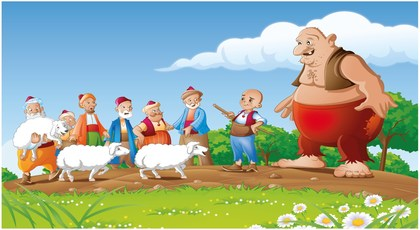

Keloğlan ile Sihirli Değnek

Evvel zaman içinde, kalbur saman içinde, cinler cirit oynarken eski hamam içinde. Ben deyim bu ağaçtan, siz deyin şu yamaçtan. Uçtu uçtu bir kuş uçtu. Kuş uçmadı gümüş uçtu; gümüş uçmadı Memiş uçtu. Uçar mı, uçmaz mı? Demeye kalmadı:
Anam düştü eşikten, babam düştü beşikten… Biri aldı maşayı, biri aldı kaşağıyı; dolandım durdum dört köşeyi. Öfke ile minarenin birini belime soktum, borudur diye! Kubbesini cebime koydum, darıdır diye!
Ne ise, var varanın, sür sürenin; baykuşu çoktur viranenin…
Bir varmış bir yokmuş, Allah’ın kulu çokmuş. Memleketin birinde bir karı koca varmış. Bu karı kocanın başını sokacak bir evi, yiyeceğini çıkaracak üç beş evlek toprağı varmış. Bu toprakta çalışır çabalar, alın teri ile elde ettiklerini yer, muhannete muhtaç olmadan yaşarlarmış.
Günün birinde bu karı kocanın şirin mi şirin, tatlı mı tatlı bir oğlan çocukları olmuş. Karı kocanın yaşamına yeni bir renk katılmış. Günler geceler geçmiş; çocuk büyümüş, serpilmiş, ailenin işlerine yardım etmeye başlamış. Artık çeşmeden eve su taşıyor, ormandan sırtında odun getiriyormuş.
Arada bir:
“Ahh! Bir de eşeğimiz olsa da, sırtımda odun taşımaktan, değirmene buğday götürmekten kurtulsam.”dermiş.
Anası ile babası onu çok severlermiş. Saçı az olduğu için: “A bizim kel oğlumuz. Keleş oğlumuz!” diye okşarlarmış. Deyiş o değiş, asıl adını bile unutur olmuşlar. Keloğlan aşağı, Keloğlan yukarı, derken. İsmi Keloğlan olarak kalmış.
Keloğlan, iyi yürekli, yardımsever, doğru sözlü, gözü pek bir delikanlı olmuş. Bu özellikleri sayesinde güç işleri bile başarabiliyormuş.
Keloğlan’ın anası ve babası, çocuklarını çok seviyorlarmış ama ona bir sanat öğretemedikleri ve sıcak sevgilerinden başka bir şey veremedikleri için de üzülüyorlarmış.
Bir gün anası böyle söyleyince Keloğlan: “Ana sen üzülme, senin sevgin bana yeter!” Diye onu teselli ediyormuş.
Bir yaz günü tarlalarındaki darılar büyümüş, güneşin sıcaklığı altında olgunlaşmış. Anası darıları devşirmiş ve oğluna:
-Haydi, Keloğlan, bunları al değirmene götür; öğüt ve al gel, ekmek yapayım. Akşama yiyelim. Demiş.
Keloğlan darı çuvalını sırtına yüklenmiş, değirmenin yolunu tutmuş. Tam değirmene yaklaştığı sırada kekliklerin yiyecek aradığını, yem bulmak için toprağı eşelediğini görmüş. Yufka yürekli Keloğlan kendi açlığını unutmuş. Çuvaldaki darıları kekliklerin üzerine saçmış. Bir süre onların darıyı kapışmalarını seyrettikten sonra evine dönmüş ve anasına:
-Ana değirmenci yoktu, darıları değirmene bıraktım döndüm. Demiş.
Ertesi sabah yine değirmenin yolunu tutmuş. Elinde kızılcık ağacından yaptığı değnek varmış. Değneğin ucu topuzluymuş. Bu değneği, köyün ormanındaki kızılcık ağacından yapmışmış. Bir gün ormanda odun toplarken, gördüğü kızılcık ağacının bir dalını beğenmiş, kesmiş. Çakısıyla kabuklarını soymuş, budaklarını yontmuş, topuzunu düzeltmiş. Olmuş güzel bir değnek.
Değnek Keloğlan’ın çok işine yarıyormuş. Bununla bazen çelik- çomak oynar, bazen yoldaki taşlara topuzu ile vurur, golf sopası yerine kullanırmış. Bu değnek, kurdun kuşun saldırısından da onu korurmuş.
Bazen yalnız başına yürürken ona arkadaşlık edermiş. Issız yollarda giderken değneği omzuna alır, türkü söyleyerek neşe içinde yolculuk eder; arada onunla yarenlik ettiği de olurmuş.
Değneği ile konuşa dertleşe darıları kekliklere saçtığı yere gelmiş. Orada durmuş, değneği hızla yere çalmış… Çalmasıyla birlikte, kocaman bir devin çıkması bir olmuş. Dev Keloğlan’ın karşısına dikilmiş ve dile gelerek:
-Emret Keloğlan, ne istersen yapayım!
-Tez darılarımı geri ver! Yedirdin kekliklere, ne derim anama! Diye çıkışmış.
Keloğlan’ın efelenmesi devin hoşuna gitmiş:
-Al bu sofrayı. Acıkınca, “açıl sofram açıl.” Der karnını doyurursun, demiş.
Keloğlan köye dönerken, acaba dev doğru mu söyledi, yoksa benimle alay mı etti? Diyerek:
“Açıl sofram açıl!” diye ünlemiş. Ünler ünlemez bir sofra açılmış. Sofranın üstünde en seçme yemekler belirivermiş. Keloğlan yemeklerle karnını bir güzel doyurmuş. Oradan gelen geçen herkesi yemeğe davet etmiş. Herkes yemiş içmiş, sofradaki yemekler yine de tükenmemiş.
Yiyenler o kadar çok yemişler ki, biraz sonra hepsi derin bir uykuya dalmışlar. Keloğlan da onlarla birlikte çayırlara uzanmış ve uyumuş kalmış.
Yemek yiyenlerden birisi:
“Bu sofrada bir sır var.” Diyerek sofraya göz koymuş ve uyumamış. Herkes uyurken sofrayı alıp kaçmış… Keloğlan biraz sonra uyanmış. Hemen sofrasını aramış. Bakmış ki sofranın yerinde yeller esiyor. Söylenmeye başlamış:
“A Keloğlan! Saman seninse samanlıkta mı senindi? Uykuya dalacak kadar yemek yenir mi? A sersem kafa!” Diyerek oburluğunu ve açgözlülüğünü kınamış. Tekrar değirmenin yolunu tutmuş.
Kekliklere darı saçtığı yere gelmiş. Artık alıştı ya, vurmuş değneği yere, Dev birden bitivermiş:
-Derdin ne Keloğlan? Dile benden ne dilersen!
-Dev kardeş, o sofra hoşuma gitmedi. O, emek vermeden yemek veriyor. Emeksiz yemeğin ise tadı olmuyor. Bizim padişahımızın ülkesinde de fakir fukaraya böyle emeksiz yemek veriyorlar. Ardından da yemek yiyenleri: “Padişahım çok yaşa!” diye bağırtıyorlar. İnsanlar çalışmadan yemeye, tembel tembel dolaşmaya, yemek uğruna el etek öpmeye alıştırılıyorlar.
Bedava sirke baldan tatlıdır, derler ya! Yemek bedava olunca çok yeniliyor. Çok yemek uyku getiriyor.Yiyenler uyuyunca da, bedava yedirenler ceplerini dolduruyorlar. Tövbe, tövbe dev kardeş! Ben bedava yemek veren sofrayı istemem!
-Peki, Keloğlan, ne istersin? İste onu vereyim.
-Dev kardeş! Çocukluğumu yaşadığım köyde mektep yoktu. Okuma, yazma öğrenemedim, kitap okuyamadım. Dünyada neler olmuş bilemedim. Sen beni görmediğim yerlere götür, tanımadığım kimselerle tanıştır. Der.
Dev, onun ne demek istediğini anlar:
-Kapa gözünü Keloğlan!
-Kapadım dev kardeş.
-Aç gözünü Keloğlan!
Der demez dev ortadan kaybolmuş.